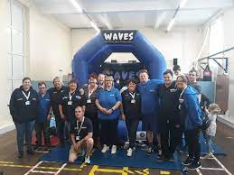
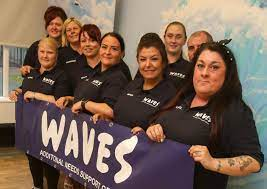
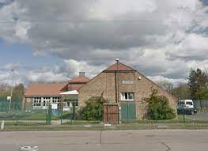

About

Waves Additional Needs Support Group Was Made To Support Kids And Young Adults With Additional Needs Such As Autism, Dyspraxia, ADHD,ect. Waves Additional Needs Support Group Also Has Fun Activities On Every Saturday Including Football, Boxing, Nerf Wars And Loads More! Waves Also Has A Park At Billton Hall And Has Loads Of Bikes, Scooters And More!